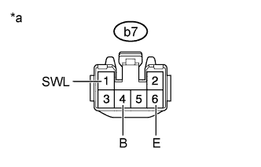
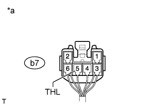
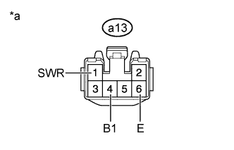
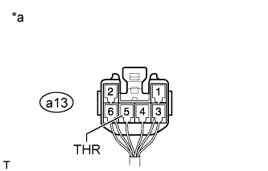

CLIMATE CONTROL SEAT SYSTEM > ON-VEHICLE INSPECTION |
| 1. INSPECT SEAT HEATER CONTROL SUB-ASSEMBLY LH |
|  |
Disconnect the b7 heater control connector.
Measure the resistance according to the value(s) in the table below.
| Tester Connection | Condition | Specified Condition |
| b7-6 (E) - Body ground | Always | Below 1 Ω |
Measure the voltage according to the value(s) in the table below.
| Tester Connection | Switch Condition | Specified Condition |
| b7-1 (SWL) - b7-6 (E) | Engine switch on (IG) Refreshing seat switch LH off | Below 1 V |
| Engine switch on (IG) Refreshing seat switch LH on | 11 to 14 V | |
| b7-4 (B) - b7-6 (E) | Engine switch off | Below 1 V |
| Engine switch on (IG) | 11 to 14 V |
| *a | Front view of wire harness connector (to Seat Heater Control Sub-assembly LH) |
Connect the b7 heater control connector.
|  |
Measure the voltage according to the value(s) in the table below.
| Tester Connection | Switch Condition | Specified Condition |
| b7-5 (THL) - Body ground | Engine switch on (IG) Refreshing seat switch LH on, MIN → MAX | Gradual increase between value below 1 V and value from 11 to 14 V |
| *a | Component with harness connected (Seat Heater Control Sub-assembly LH) |
| 2. INSPECT SEAT HEATER CONTROL SUB-ASSEMBLY RH |
|  |
Disconnect the a13 heater control connector.
Measure the resistance according to the value(s) in the table below.
| Tester Connection | Condition | Specified Condition |
| a13-6 (E) - Body ground | Always | Below 1 Ω |
Measure the voltage according to the value(s) in the table below.
| Tester Connection | Switch Condition | Specified Condition |
| a13-1 (SWR) - a13-6 (E) | Engine switch on (IG) Refreshing seat switch RH off | Below 1 V |
| Engine switch on (IG) Refreshing seat switch RH on | 11 to 14 V | |
| a13-4 (B1) - a13-6 (E) | Engine switch off | Below 1 V |
| Engine switch on (IG) | 11 to 14 V |
| *a | Front view of wire harness connector (to Seat Heater Control Sub-assembly RH) |
Connect the a13 heater control connector.
|  |
Measure the voltage according to the value(s) in the table below.
| Tester Connection | Switch Condition | Specified Condition |
| a13-5 (THR) - Body ground | Engine switch on (IG) Refreshing seat switch RH on, MIN → MAX | Gradual increase between value below 1 V and value from 11 to 14 V |
| *a | Component with harness connected (Seat Heater Control Sub-assembly RH) |